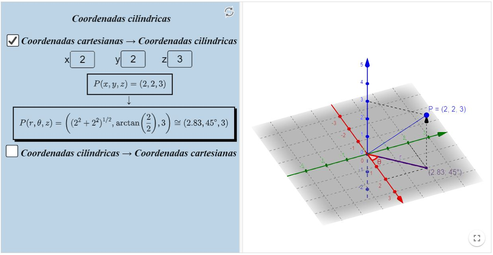

Revisão de Geometria Analítica
Mudança de coordenadas cilíndricas
Relações entre coordenadas cartesianas e coordenadas cilíndricas
Bem como em coordenadas polares, eventualmente é conveniente escrever pontos em coordenadas cilíndricas. Porém, desta vez
isso será útil para descrever algumas superfícies. Esse novo sistema de coordenadas nada mais é que a junção do sistema de
coordenadas polares com o eixo - $O Z$, nos permitindo viajar para o espaço.
Dado um ponto $P$ em coordenadas cilíndricas, ele será da forma $P=P(r, \theta, z)$. Obviamente, ele ainda existirá na forma
cartesiana cotidiana, na forma $P=P(x, y, z)$. Ademais, as relações entre coordenadas são dadas por:
| $x=r \cos (\theta)$ | $\operatorname{sen}(\theta)$ | $z=z$ |
|---|
| $x=r \cos (\theta) \Rightarrow x^{2}=r^{2} \cos ^{2}(\theta)$ | $y=r \operatorname{sen}(\theta) \Rightarrow y^{2}=r^{2} \operatorname{sen}^{2}(\theta)$ | $r^{2}=x^{2}+y^{2} \Rightarrow r=\sqrt{x^{2}+y^{2}}$ |
|---|---|---|
| $x=r \cos (\theta) \Rightarrow \cos (\theta)=\frac{x}{r}$ | $y=r \operatorname{sen}(\theta) \Rightarrow \operatorname{sen}(\theta)=\frac{y}{r}$ | $\operatorname{tg}(\theta)=\frac{y}{x} \Rightarrow \theta=\operatorname{arctg}\left(\frac{y}{x}\right)$ |
Recursos computacionais
Mudança de coordenadas cilíndricas
Livro Geogebra
